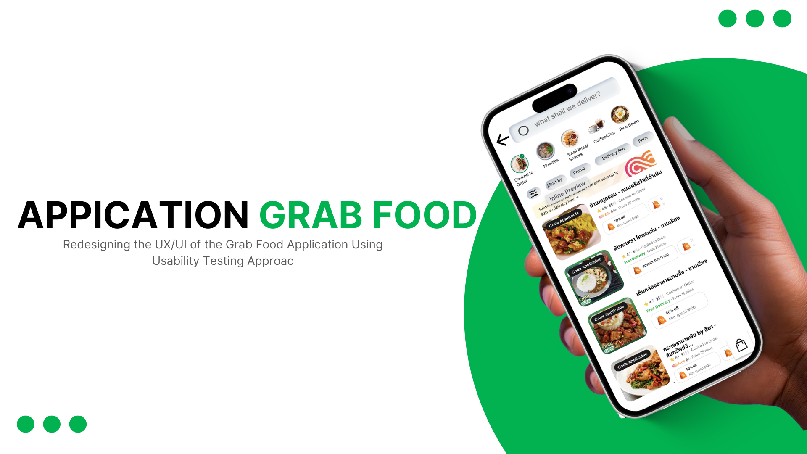

2025
2025
Gold Price Forecasting Model
A class project exploring historical gold price trends through data preparation, regression analysis, and visualization to support business insights.

2024Food Delivery App UX/UI Redesign
A UX/UI redesign project focused on improving the food ordering experience by addressing payment, ordering flow, and rider communication.
 2025
2025
Educational Dinosaur Game
An educational game developed in Roblox Studio that combines interactive exploration with quizzes to create an engaging learning experience.
Ledgerline
A real-time collaborative spreadsheet engine built on CRDTs.
Ledgerline is a from-scratch spreadsheet core that lets multiple people edit the same sheet with zero merge conflicts. I implemented a custom Conflict-free Replicated Data Type for cell state, a dependency graph for formula recalculation, and a WebSocket sync layer that keeps 40+ concurrent editors under 80ms of drift.
- Formula recalculation graph handles 10,000+ cell dependencies without a visible stall
- Custom binary sync protocol cut payload size by 63% versus JSON diffs
- Presence cursors and cell-level locking for a genuinely multiplayer feel
Waypoint
An offline-first route planner for cyclists, built as a PWA.
Waypoint caches elevation and road-surface data locally so riders can plan and follow routes with zero signal. I wrote the tile caching layer, an on-device routing algorithm (a modified A*), and a service worker strategy tuned for spotty connectivity.
- Full route planning works with the network disabled
- Custom A* variant weighted for elevation gain and surface quality
- 4.7/5 average rating across 200+ beta testers
Signal Desk
A support-ticket triage dashboard with ML-assisted prioritization.
Built for a campus startup, Signal Desk ranks incoming support tickets by urgency and sentiment using a lightweight classifier, then routes them through a Kanban-style queue. The front end is a hand-rolled reactive layer without a framework, built to stay under 40KB gzipped.
- Reduced average ticket response time by 41% in a 6-week pilot
- Reactive UI layer written without any framework, under 40KB gzipped
- Classifier retrains nightly on a rolling 90-day ticket window
Kiln
A CLI that turns a folder of markdown notes into a static wiki.
Kiln is a small, fast static-site generator purpose-built for personal knowledge bases. It resolves backlinks, builds a graph view, and rebuilds incrementally so a 2,000-note vault regenerates in under a second.
- Incremental rebuilds: 2,000 notes regenerate in under 1 second
- Automatic backlink graph rendered as an interactive SVG
- 230+ GitHub stars, adopted by a handful of local study groups
Beyond the Classroom
Staff Lead – กีฬาสีคณะ 2025

รับผิดชอบประสานงานและดูแลการดำเนินกิจกรรมร่วมกับทีมสตาฟ และสนับสนุนให้กิจกรรมดำเนินไปอย่างราบรื่น
Staff Lead – กีฬาสีคณะ
รับผิดชอบประสานงานและดูแลการดำเนินกิจกรรมร่วมกับทีมสตาฟ และสนับสนุนให้กิจกรรมดำเนินไปอย่างราบรื่น
Thailand's Future: Cybersecurity & AI 2025

เข้าร่วมสัมมนาเกี่ยวกับ Cybersecurity และ AI เพื่อเรียนรู้แนวโน้มเทคโนโลยีและการประยุกต์ใช้ในภาคธุรกิจ รวมถึงแลกเปลี่ยนความรู้จากผู้บรรยาย
Cybersecurity & AI Seminar
เข้าร่วมสัมมนาเกี่ยวกับ Cybersecurity และ AI เพื่อเรียนรู้แนวโน้มเทคโนโลยีและการประยุกต์ใช้ในภาคธุรกิจ รวมถึงแลกเปลี่ยนความรู้จากผู้บรรยาย
Computer Network and Security 2024

ลงพื้นที่สัมภาษณ์ร้าน Seven Net จังหวัดมหาสารคาม เพื่อศึกษาการติดตั้งและการจัดการระบบเครือข่ายอินเทอร์เน็ต นำข้อมูลมาวิเคราะห์และจัดทำรายงานประกอบรายวิชา
Computer Network & Security Case Study
ลงพื้นที่สัมภาษณ์ร้าน Seven Net จังหวัดมหาสารคาม เพื่อศึกษาการติดตั้งและการจัดการระบบเครือข่ายอินเทอร์เน็ต นำข้อมูลมาวิเคราะห์และจัดทำรายงานประกอบรายวิชา
สหกรณ์ผู้เลี้ยงโคนม มหาสารคาม จำกัด 2025

ลงพื้นที่ศึกษากระบวนการผลิตของสหกรณ์ผู้เลี้ยงโคนม มหาสารคาม จำกัด สัมภาษณ์ข้อมูลเกี่ยวกับขั้นตอนการผลิตและการดำเนินงาน เพื่อนำข้อมูลมาวิเคราะห์และจัดทำรายงาน
กระบวนการผลิต สหกรณ์ผู้เลี้ยงโคนม มหาสารคาม จำกัด
ลงพื้นที่ศึกษากระบวนการผลิตของสหกรณ์ผู้เลี้ยงโคนม มหาสารคาม จำกัด สัมภาษณ์ข้อมูลเกี่ยวกับขั้นตอนการผลิตและการดำเนินงาน เพื่อนำข้อมูลมาวิเคราะห์และจัดทำรายงาน
Programming in Digital Business 2022

ร่วมกับเพื่อนพัฒนาและนำเสนอผลงานในรายวิชาการเขียนโปรแกรม โดยทดลองสร้างโปรแกรมตามโจทย์ของรายวิชาและนำเสนอแนวคิดหน้าชั้นเรียน
Principle of Programming Project
ร่วมกับเพื่อนพัฒนาและนำเสนอผลงานในรายวิชาการเขียนโปรแกรม โดยทดลองสร้างโปรแกรมตามโจทย์ของรายวิชาและนำเสนอแนวคิดหน้าชั้นเรียน
Tools & Technologies
The tools and technologies I've learned through coursework, academic projects, and continuous self-learning.
Learning Beyond the Classroom
Courses and professional training that support my academic learning and practical skills.

Microsoft Power BI Training
Data Visualization & Business Intelligence
Microsoft Power BI (3 Hours)
Professional Qualification Institute • 2025
Microsoft Power BI Training
Professional Qualification Institute (Public Organization) • 2025

Generative AI & ChatGPT for Research
KUMOOC Certification • 2025

Introduction to Data Science
Cisco Networking Academy • 2023
Verify Credential ↗Introduction to Data Science
Cisco Networking Academy Credentials

Mobile-Friendly Website Development
Thai MOOC • RMUTI • 2025
Verify Credential ↗Mobile-Friendly Website Development
Thai MOOC • Rajamangala University of Technology Isan
Academic Qualifications
University exit assessments demonstrating English and digital competency.

English Exit Examination
CEFR B2 (Overall Score: 67)
Mahasarakham University • February 2026
English Exit Examination (MSU)
Mahasarakham University Exit Assessment Competency

Digital Literacy Exit Examination
Score: 56.67 (Moderate)
Mahasarakham University • July 2026
Digital Literacy Exit Examination (MSU)
Mahasarakham University Exit Assessment Competency
ยินดีที่ได้รู้จักค่ะ
ขอบคุณที่เข้ามาเยี่ยมชมพอร์ตโฟลิโอของหนู หากสนใจพูดคุยเกี่ยวกับผลงาน หรือมีโอกาสฝึกงานที่เหมาะสม สามารถติดต่อมาได้เลยนะคะ หนูพร้อมเรียนรู้ เปิดรับประสบการณ์ใหม่ และยินดีแลกเปลี่ยนความคิดเห็นเสมอค่ะ
- Emailnatsupha.yo@email.com
- Tel.0659106769
- Locationมหาสารคาม ประเทศไทย
- SatusLooking for Internship Opportunities